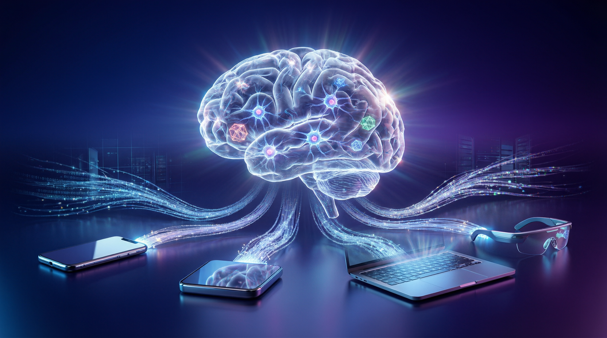

思維鏈讓 AI 從預測 token 升級至預測 idea，搜尋推薦系統兆美元經濟模式即將被打破

Google DeepMind 副總裁紀懷新表示，過去 20 年由搜尋推薦系統撐起的兆美元網路經濟，即將被具備「思維鏈」推理能力的 AI 打破。AI 將從預測下一個 token 升級至預測下一個 idea，催生能自動操控軟體工具的代理式 AI，整個網路生態系統將出現重大改變。
過去 20 年來，智慧型手機每一個 App 都是搜尋、推薦系統的變體。Google 搜尋引擎、YouTube、Instagram、抖音的短影音推薦，全都基於搜尋推薦系統。這個模式每年為全球網際網路產業帶來 1 兆美元的收入。
過往大語言模型依賴機器學習預測下一個 token，但很快就遭遇瓶頸——因為它沒有辦法做多步驟推理。突破點在於「思維鏈」：訓練 AI 像教小孩子一樣——給小孩看數學題怎麼解，讓小孩從中學習解決問題的步驟，就能舉一反三。
AI 發展出推理能力後，終於從預測下一個 token 升級至可以預測下一個 idea，能自動規劃步驟並操控軟體工具。以 Google 與加拿大電信業者 Bell 的合作案例：用户拿新網路設備不知道怎麼設定時，用 Google App 掃一掃就會自動引導。
矽谷正在發展「Agent Harness」（駕馭代理人），用來解決 AI 記憶力差、代理式 AI 不受控、資安風險等挑戰。不再依賴更新、更厲害的模型，而是把 AI 模型變成一個無需持續監督也能完成真實工作的可靠工人。
紀懷新建議：「Agent Harness 台灣一定要跟上，它非常、非常重要。」不同產業需要的 LLM 也會不同，AI 不只能依照不同需求而「可程式化」（programmable），還將打破過去 20 年由搜尋推薦系統主導的網路經濟模式。
你還覺得以後的手機還是長得一模一樣嗎？
— 紀懷新，Google DeepMind 副總裁紀懷新認為，AI 推理能力將擴展至跨手機、電腦、智慧眼鏡等各種不同裝置。只要在同一個帳號裡，這些裝置就擁有同樣的記憶，換裝置也不影響 AI 使用，能即時反應並高度客製化。過去 20 年由搜尋推薦系統主導的網路經濟模式，即將被具備推理能力的 AI 打破。
| 維度 | 舊時代：搜尋推薦 AI | 新時代：推理 AI |
|---|---|---|
| 核心能力 | 預測下一個 token | 預測下一個 idea |
| 任務類型 | 搜尋、推薦、分類 | 自動規劃、多步驟執行 |
| 工具操控 | 無法主動操控軟體 | 自動操控軟體工具 |
| 輸出形式 | 文字為主 | 文字、聲音、影像多模態 |
| 產業年收入 | 1 兆美元（搜尋推薦） | 即將重塑 |